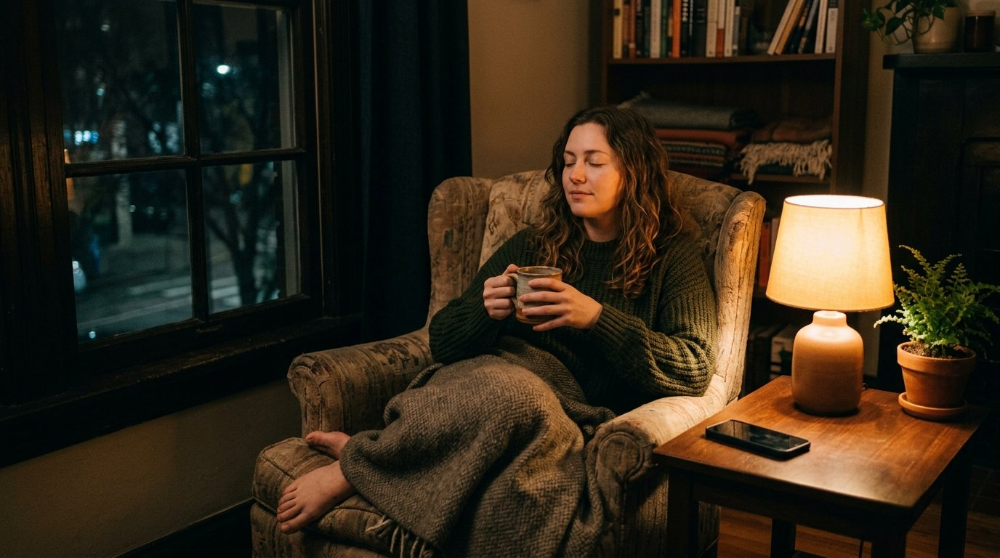

Comprar cosas a las once de la noche: la trampa de calmar el cansancio con paquetes
Ese impulso automático de meter objetos en la cesta tras una jornada demoledora no es capricho ni deseo real: es fatiga mental pura. Cómo frenar la inercia antes de darle a pagar y recuperar el descanso sin cargos en cuenta.
Son casi las once y media de la noche. Has cenado de pie o recalentado algo a toda prisa, has cerrado el correo con los hombros clavados en la nuca y te dejas caer en el sofá con una pesadez densa que no se disuelve solo con apoyar la espalda.
En teoría es tu rato de tregua. El único tramo del día donde nadie te exige un informe de última hora, una contestación inmediata por Teams ni un favor imprevisto. Pero en vez de aflojar la musculatura y dejar que el cerebro baje de revoluciones, desbloqueas la pantalla del móvil por pura inercia magnética.
Entras buscando nada en particular. A los tres minutos ya estás dentro de una tienda online. Empiezas curioseando una funda para el portátil y acabas comparando tres organizadores de cajones, una lámpara articulada nórdica y unas zapatillas de estar por casa que jamás en tu vida habías necesitado hasta hace diez minutos.
Revisas las fotos de catálogo, lees opiniones de compradores anónimos y, en cuestión de segundos, ocurre el autoengaño: te convences de que ese objeto exacto solucionará tu desorden vital a partir del jueves por la mañana.
Apoyas el pulgar sobre el lector de huella. El cargo bancario se confirma con una vibración agradable. Sientes un destello breve, casi cálido, de alivio. Bloqueas la pantalla, la dejas en la mesilla y te duermes con los ojos resecos y la mente acelerada.
Pero cuarenta y ocho horas después el repartidor toca al timbre. Recoges la caja marrón con cinta de embalar, la abres con unas tijeras en la cocina y el entusiasmo se disuelve en el aire en cinco segundos. Lo que tienes en las manos no era una solución: es solo otro trasto más que ocupará espacio en una balda.
El secuestro de la dopamina compensatoria
No compraste ese producto porque fuera una ganga irrepetible ni porque resolviera una carencia real: lo compraste porque estabas exhausto.
Cuando tu jornada laboral ha sido un desfile interminable de quejas de clientes, exigencias ajenas y microdecisiones forzadas, tu cerebro llega a la noche sintiendo que ha perdido por completo el timón de su vida. Sufres lo que los neurocientíficos denominan déficit de autonomía percibida.
En ese estado de quiebra energética, gastar treinta o cuarenta euros en algo que viajará físicamente hasta tu casa se percibe como una pequeña victoria personal. Es el premio que te otorgas a ti mismo por haber soportado el peso del día sin romperte.
El problema es que a las once de la noche tu corteza prefrontal —el juez encargado de medir las consecuencias a largo plazo— está fuera de servicio. No estás comprando con criterio racional: estás intentando tapar el estrés con una dosis express de dopamina barata.
El espejismo del «yo futuro»
Nos engañamos creyendo que el próximo paquete nos convertirá en una persona distinta: más calmada, más elegante, más disciplinada. Creemos que con un termo nuevo beberemos más agua, que con una libreta encuadernada en tela escribiremos un diario todas las mañanas o que con una lámpara cálida leeremos novelas en lugar de mirar reels.
Pero los objetos no generan los hábitos por sí solos. Lo que de verdad te falta a esas horas intempestivas no es un nuevo gadget ni un set de tazas artesanales: es apagar las pantallas a tiempo y concederte el derecho al silencio.

Tres reglas sobrias de calle para frenar la inercia
No hace falta que canceles tus cuentas bancarias ni que te aísles en una cueva. Para desactivar la compra nocturna por estrés basta con introducir fricción física deliberada antes de pulsar el botón:
1. La cuarentena física de las 24 horas sobre papel
Adopta una regla de hierro: queda terminantemente prohibido comprar nada que descubras después de las 20:30 h. Si sientes el flechazo irresistible por un producto, coge un cuaderno de notas, escribe el nombre del objeto y el precio con lápiz, y cierra la libreta. En el noventa por ciento de los casos, a las diez de la mañana siguiente leerás esa nota y te dará la risa comprobar que estuviste a punto de pagar por algo que no necesitas en absoluto.
2. Elimina los datos de pago guardados en el navegador
Las grandes plataformas gastan millones de dólares en eliminar cada milímetro de fricción: compra en 1 clic, Apple Pay, autocompletado de tarjeta. Combátelo a la inversa: borra tus tarjetas del móvil. Si para comprar tienes que levantarte del sofá a oscuras, cruzar el pasillo helado y buscar la cartera física en el abrigo, la pereza vencerá al impulso y te ahorrarás el dinero.
3. El cargador del teléfono fuera del dormitorio
Tener el dispositivo conectado junto a la almohada es una autopista directa al insomnio y a la compra zombi. Si quieres dormir de verdad, deja el móvil cargando en el salón o en la cocina. Como ya vimos en nuestro ensayo sobre el protocolo de descarga nocturna para vaciar la cabeza en papel, el descanso empieza en el momento exacto en que trazas una frontera física entre la tecnología y tu cama.
Comprar menos para vivir con menos ruido
La próxima vez que sientas el aguijonazo nocturno de abrir una aplicación de compras, detente un segundo. Pregúntate con honestidad: ¿necesito este objeto o lo que necesito es cerrar los ojos, respirar hondo y dar por terminado el día?
La tranquilidad de espíritu no viaja en una furgoneta de mensajería urgente. Empieza cuando te das cuenta de que el alivio no está en acumular más cosas, sino en tener el coraje de necesitar muchas menos.
¿Te cuesta poner límites a las demandas del día a día?
Aprende a proteger tu tiempo, decir que no a los compromisos que te saturan y recuperar tu energía mental antes de que la noche te pase factura. Descubre el cuaderno guiado Habla Claro.